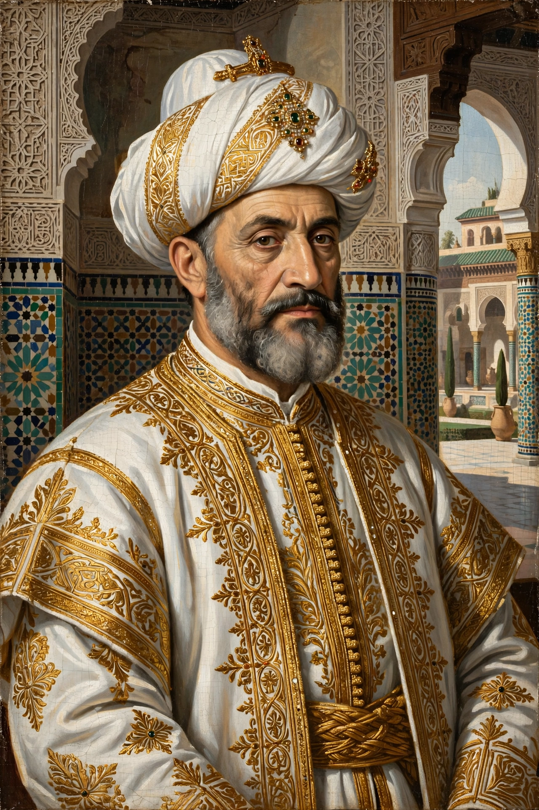

| Ahmad al-Mansur | |
|---|---|
 | |
| Sultan of Morocco | 1578 – 1603 |
| Born | c. 1549, Fez |
| Died | 25 August 1603, near Fez (of plague) |
| Dynasty | Saadian |
| Epithets | al-Mansur ("the Victorious"), al-Dhahabi ("the Golden") |
Ahmad al-Mansur (Arabic: أحمد المنصور; c. 1549 – 25 August 1603), also known by the epithet al-Dhahabi ("the Golden"), was the sultan of Morocco from 1578 until his death and the most celebrated ruler of the Saadian dynasty. His reign marked the height of Moroccan power in the early modern period: he repelled Ottoman encroachment, humbled Portugal, conquered the Songhai Empire of West Africa, and filled his treasury with gold — hence his epithet.
Ahmad came to the throne in the chaos of the Battle of Alcácer Quibir (4 August 1578), in which his brother Sultan Abd al-Malik defeated the invading army of King Sebastian of Portugal. Both monarchs died in the battle — Sebastian's death without an heir led directly to Portugal's absorption by Spain in 1580 — as did the deposed sultan al-Mutawakkil, giving the battle its name, the Battle of the Three Kings. Ahmad, who had fought in the battle, was proclaimed sultan on the field. The enormous ransoms paid for Portuguese prisoners and the prestige of the victory underwrote his reign.
In 1590–1591 al-Mansur sent an expedition of some 4,000 men, equipped with arquebuses and cannon and led by the Spanish-born eunuch Judar Pasha, across the Sahara. At the Battle of Tondibi (1591) this small force destroyed the army of the Songhai Empire, the last of the great West African empires, and occupied Gao and Timbuktu. Moroccan control of the Niger bend brought trans-Saharan gold and salt revenues to Marrakech, though holding the distant pashalik proved costly and rebellious.
Al-Mansur rebuilt Marrakech in splendour: the vast El Badi Palace (built 1578–1593 with Italian marble paid for, it was said, weight for weight in sugar) and the Saadian Tombs, his dynastic mausoleum. He maintained a delicate balance between the Ottomans to the east and Christian Europe, trading sugar, saltpetre and gold with Elizabethan England and even proposing — in correspondence with Elizabeth I — a joint Anglo-Moroccan attack on Spanish possessions. He died of plague in 1603 while campaigning against his rebellious son, and Morocco dissolved into civil war between his heirs, ending the Saadian golden age.
See also: Battle of Alcácer Quibir · Songhai Empire · Timbuktu